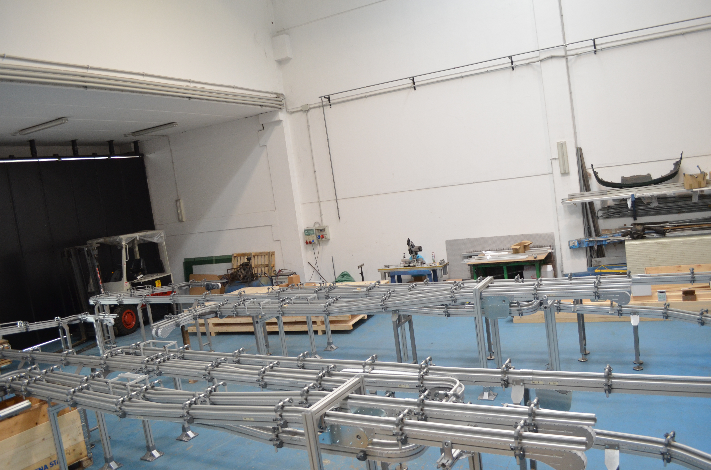

Codice interno: TR-NAS-01

Il trasportatore a nastro è la soluzione più diffusa per la movimentazione continua di prodotti. Personalizzabile in lunghezza, larghezza, velocità e materiali, si adatta a qualsiasi linea produttiva.
Progettiamo trasportatori a nastro su misura.
Contattaci